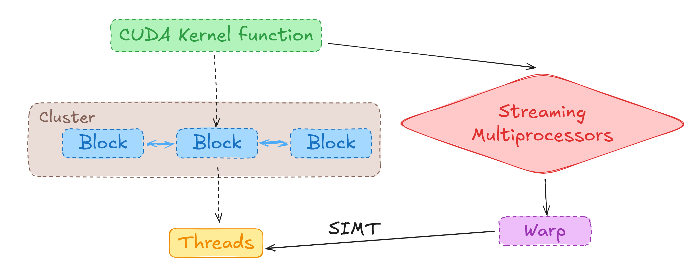

CUDA 加速 1 - 结构简述
目标
理解GPU的物理和逻辑架构，有利于分析CUDA编程可能存在的传输和运算瓶颈。本文中我们会介绍GPU和CUDA编程中涉及的物理结构和实际编程调用的逻辑结构，并以本机为例（RTX4060），学习调用英伟达官方示例程序显示GPU的具体参数。
GPU 物理架构
GPU内含有多个核（CUDA Core），并通过流式多处理器（SM: Streaming Multiprocessor）进行调度。GPU含有一个总的公共内存（Global Memory），即对应GPU的显存；每个流式多处理器有内部的共享内存（Shared Memory），线程对于共享内存的访问速度优于GPU公共内存。因此：在编程中尽量避免线程频繁读取公共内存的数据，例如行主序矩阵按列读取。
CUDA 编程架构
区别于物理架构，CUDA引入了 Thread, Warp 和 Block 的概念。
- Thread 是指令执行的最小单位，对应CUDA Core，但是一个CUDA Core可以通过指令级流水线 + 上下文保持 + 高速切换在固定的时钟周期完成不同线程的计算任务。
- Warp 是介于SM和Thread的过渡单位，并不完全属于虚拟概念，SM中存在硬件 Warp Scheduler 负责调度实际线程。一般来说，一个Warp对应32个Thread，通过多线程并行单指令（SIMT）的方式并行执行同一条指令。在实际编程中，一般不会接触到这个层面的作业（例外：warp
__shfl_）。当并未完全调用一个Warp中的所有线程的时候，多余的线程将会静默，造成浪费。因此，我们一般需要关注：使用32的整倍数作为block内的线程数。 - Block 是 CUDA Kernel 编程的主要逻辑对象。一般在计算过程中，我们会调用多个block完成不同部分的任务，每个block会分配给一个SM（并非一一对应，一个SM可以处理多个block任务）,同时在SM上创建对应的局部共享内存，block内的线程可以快速访问。逻辑上来说，block会把任务分配给Thread进行操作，对应的物理结构上，SM会通过Warp调用线程进行计算。对于实际编程来说，我们主要需要关注Block和Thread的合理分配，数据在局部共享内存上的访问，可能存在的原子化操作。
我们来看一个典型的CUDA Kernel:
1 | |
这里我们显式设置了block_size和threads_per_block，并创建了block级别的共享内存c[32]，这个任务会通过SM调用32个block，每个block涉及32个threads，刚好是一个warp的大小；每个block在SM上有一个共享内存的区域，内部的线程可以快速访问，block间不能相互访问这部分内存。

在CUDA 9.0计算能力之后的版本，额外添加个一个Cluster的版块，CUDA支持Cluster内的block交换数据，而不需要将数据返回到GPU的global memory再进行分发，可以有效增强协作能力。
deviceQuery
我们可以下载CUDA官方样例库Cuda-sample，并按照对应内容安装。通过运行build/Samples/1_Utilities/deviceQuery/ ，我们可以得到：
这里我们可以看到：
- CUDA 驱动版本 12.8 - 对应安装pytorch、CUDNN等版本
- CUDA 计算能力 8.9 - 因此不支持Cluster操作
- Global Memory 8GB - 即显存
- CUDA Core 3072
- Memory Bus Width 128 bit - 总线宽度
因此理论内存带宽：
- Total Amount of Constant Memory 65536 bytes = 64 KB - 常量内存大小，可以通过
__constant__指定，全局共享 - Total Amount of Shared Memory per Block 49152 bytes = 48 KB - Block内部共享内存大小，可以通过
__shared__指定，由内部的线程共享 - Total Shared Memory per Multiprocessor 102400 bytes = 100 KB - SM共享内存大小，是一个SM可以分配给不同Block的最多大小，会在不同Block间划分
- Maximum Number of Threads per Multiprocessor 1536 = - SM对应的最大线程数
- Maximum Number of Threads per Block 1024 = - Block对应的最大线程数，因此一般会使用
grid3(32, 32)作为最大的二维分配。（尽管如此，当你调用多个1024的Block时，SM剩下的512个线程将等待，因为无法形成一个完整的Block。因此，建议使用小一些的Block，比如512个Thread，此时能较好的利用资源）